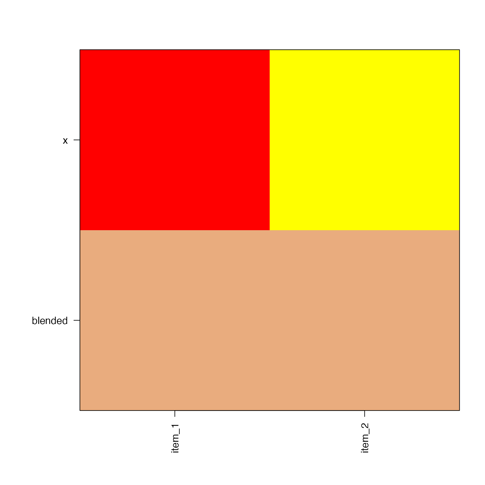
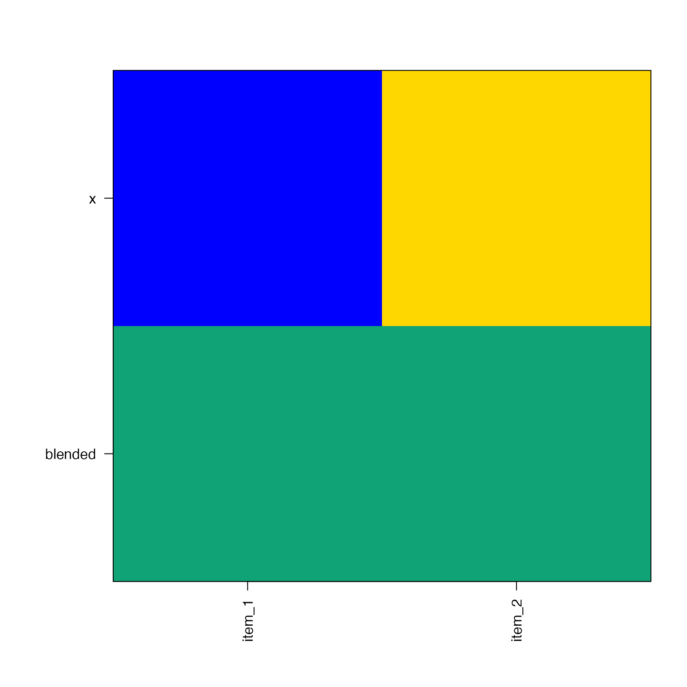
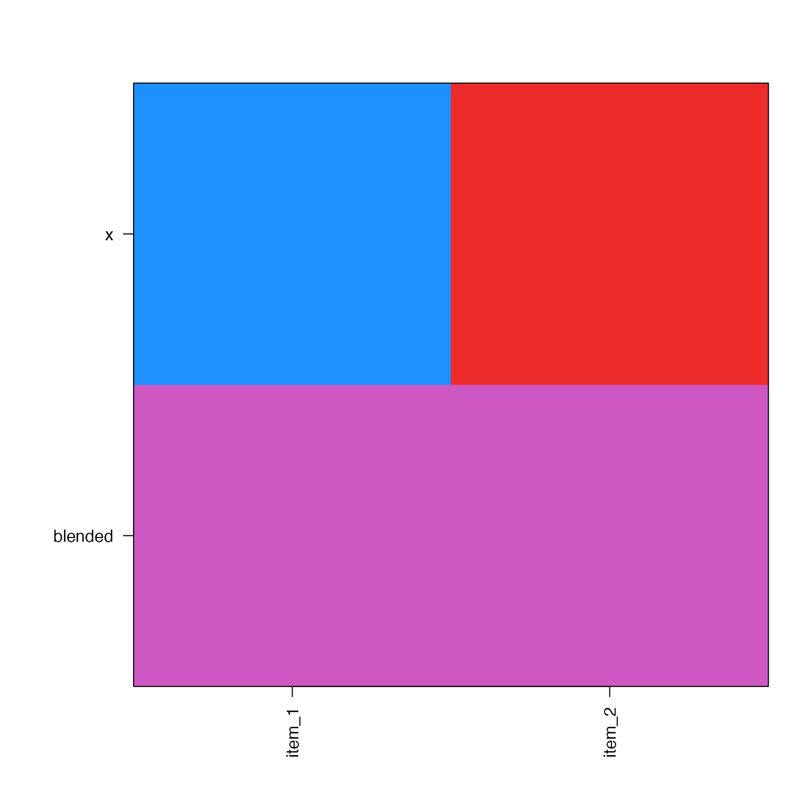

Blend multiple colors
Usage
blend_colors(
x,
preset = c("ryb", "none", "dichromat", "rgb", colorjam_presets()),
h1 = NULL,
h2 = NULL,
do_plot = FALSE,
lens = 0,
c_weight = 0.2,
c_floor = 12,
apply_alpha = FALSE,
flatten_alpha = FALSE,
bg = NULL,
...
)Arguments
- x
charactervector of R colors in hex format, orlistof color vectors, where each vector will be independently blended.- preset
charactervalue indicating the color wheel preset, default"ryb"for red-yellow-blue paint-like color blending. It is passed tocolorjam::h2hwOptions(), and permits any value returned bycolorjam_presets().- do_plot
logicalindicating whether to depict the color blend operation usingjamba::showColors().- lens
numericvalue used to influence the color saturation after averaging color wheel angles.- c_weight
numericvalue used to weight the average color chroma (saturation) using the mean chroma values of the input colors. Whenc_weight=0the chroma uses the radius returned by the mean color wheel angle.- c_floor
numericvalue indicating theCchroma HCL value below which a color is considered to be "grey" and unsaturated. When this happens, the hue contribution is set to 0.001 relative to other colors being blended. This correction is done because every color is assigned oneHhue value in HCL, even when theCchroma (saturation) is zero, therefore these colors effectively have noHhue.- apply_alpha
logicaldefault TRUE, whether to apply alpha transparency to the output color. In other words, if the input colors are transparent, the output will also contain transparency whenapply_alpha=TRUE.- flatten_alpha
logicaldefault FALSE, whether to "flatten" the color transparency by blending with the current background color, defined bybg. This argument is only used whenapply_alpha=TRUE.- bg
characterdefault NULL, used to define the default background color, used only whenflatten_alpha=TRUE. When NULL, it checks for an open graphics device withdev.list()and if open it open it usespar("bg"). However if no graphics device is open, it does not callpar("bg")because that would open a new graphics device. Therefore when no graphics device is open, NULL is converted to "white" background.- ...
additional arguments are ignored.
Value
character vector with blended color; when input x
is a list the returned vector will have length length(x).
Details
This function is intended to blend two or more colors, by default using "paint mixing" style, similar to subtractive color mixing. It accomplishes this goal by using a red-yellow-blue color wheel (very similar to cyan-yellow-magenta), then determines the average color hue with appropriate loss of color saturation.
The process creates a unit vector for each color, whose length is scaled relative to the saturation and alpha transparency, with maximum length=1. The average angle of these unit vectors is used as the final color hue, and the distance from origin is used to derive the new color chroma (similar to saturation). The end goal is for blue-yellow to make green, blue-red to make purple, and red-yellow to make orange. Current RGB color blending fails at least one of these criteria.
This approach enables blending more than two colors, which is fairly unique for color functions in R. Note that the approach, when used to blend multiple very different colors, tends to "muddy" the output color, similar to using finger paints. Eventually if you add enough colors, it turns "bleh".
New transparency arguments in 0.0.30.900
apply_alpha=TRUEwill return a color with appropriate alpha transparency based upon the input colors. For example, blending red with red should always produce red. However, blending 50% transparent red with 50% transparent red should produce 75% transparent red. In effect, the redness should build with more layers of transparent red.flatten_alpha=TRUE(default is FALSE) will flatten a transparent blended color to the background, which is useful for situations where the alpha transparency would be ignored. In other words, 34% transparent red would be flattened to"#FFAAAAFF"and should appear nearly identical to"#FF000057"in R plots.color wheel red-yellow-blue, subtractive color mixing
can blend more than two colors at once
accounts for transparency of individual colors
The basic design guide was to meet these expectations:
red + yellow = orange
blue + yellow = green
red + blue = purple
blue + red + yellow = some brown/gray substance
The input x can be a vector of colors, or a list. When
x is a list then the unique vectors are blended, returning
a vector with length length(x).
The default additive color mixing, with red-green-blue colors used in electronic monitors, does not meet these criteria. (In no logical paint mixing exercise would someone expect that mixing red and green would make yellow; or that blue and yellow would make grey.)
In general the function performs well, with some exceptions
where the color hue angle is not well-normalized opposite
its complementary color, and therefore does not make the
expected "brownish/grey" output. Examples include
blend_colors(c("yellow", "purple")) which is closer
to blue + yellow = green, because purple is also composed
of blue with some red. Indeed, the R color hue for purple
is 283; the hue for blue is 266; the hue for red is 12 (372);
which means purple is substantially closer to blue than red.
A suitable workaround in this case is to use
blend_colors(c("yellow", "deeppink4")).
See also
Other colorjam core:
closestRcolor(),
closest_named_color(),
color_complement(),
colors_to_df(),
group2colors(),
rainbowJam(),
sort_colors(),
subset_colors()
Examples
blend_colors(c("red", "yellow"), do_plot=TRUE)

#> [1] "#E9AC7EFF"
blend_colors(c("blue", "gold"), do_plot=TRUE)

#> [1] "#10A376FF"
blend_colors(c("dodgerblue", "firebrick2"), do_plot=TRUE)

#> [1] "#CC57C3FF"
blend_colors(c("green", "dodgerblue"), do_plot=TRUE)
 #> [1] "#00D8DDFF"
blend_colors(c("red", "gold", "blue"), do_plot=TRUE)
#> [1] "#00D8DDFF"
blend_colors(c("red", "gold", "blue"), do_plot=TRUE)
 #> [1] "#B07A9BFF"
blend_colors(c("deeppink2", "yellow"), do_plot=TRUE)
#> [1] "#B07A9BFF"
blend_colors(c("deeppink2", "yellow"), do_plot=TRUE)
 #> [1] "#D5B09EFF"
blend_colors(c("blue4", "darkorange1"), do_plot=TRUE)
#> [1] "#D5B09EFF"
blend_colors(c("blue4", "darkorange1"), do_plot=TRUE)
 #> [1] "#8D4B69FF"
blend_colors(c("#FF000040", "#FF000080"), do_plot=TRUE)
#> [1] "#FF0000FF"
title(main=paste0("blend identical transparent colors\n",
"returning transparent colors\n"))
#> [1] "#8D4B69FF"
blend_colors(c("#FF000040", "#FF000080"), do_plot=TRUE)
#> [1] "#FF0000FF"
title(main=paste0("blend identical transparent colors\n",
"returning transparent colors\n"))
 blend_colors(c("#FF000040", "#FF000080"), do_plot=TRUE, flatten_alpha=TRUE)
#> [1] "#FF0000FF"
title(main=paste0("blend identical transparent colors\n",
"then flatten alpha transparency\n(same visual result)"))
blend_colors(c("#FF000040", "#FF000080"), do_plot=TRUE, flatten_alpha=TRUE)
#> [1] "#FF0000FF"
title(main=paste0("blend identical transparent colors\n",
"then flatten alpha transparency\n(same visual result)"))
 blend_colors(list(c("red", "yellow"), c("blue", "gold")), do_plot=FALSE)
#> [1] "#E9AC7EFF" "#10A376FF"
blend_colors(list(c("red", "yellow"), c("blue", "gold")), do_plot=FALSE)
#> [1] "#E9AC7EFF" "#10A376FF"